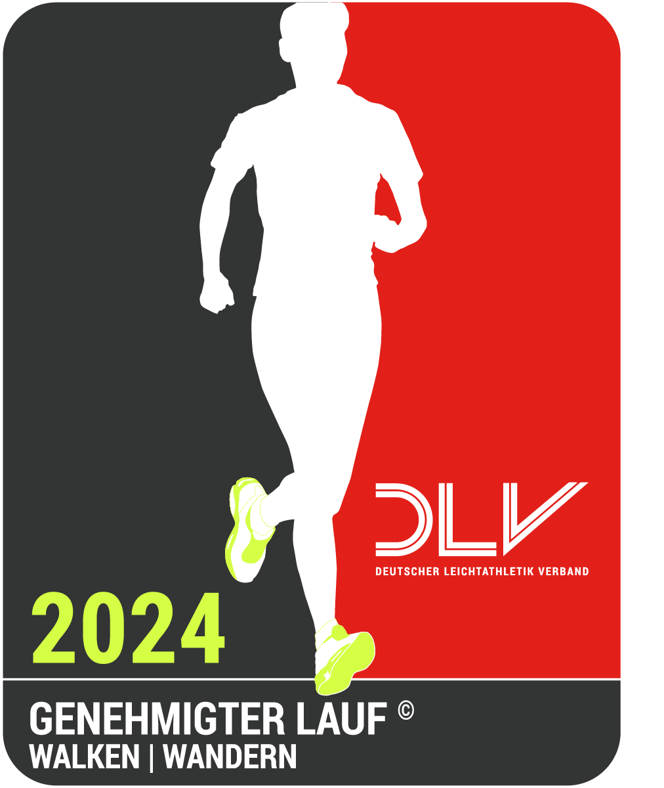

5. 7-MEILEN-TRAIL
22. September 2024

| WANN? | Sonntag, den 22. September 2024 |
| WO? |
Kaiserslauterer Wald Anmeldung: Vereinsheim der TSG Kaiserslautern Start/Ziel: Gegenüber vom Restaurant Sommerhaus |
| WAS? |
Traillauf, 100% Waldwege - asphaltfrei Lange Strecke: 7 Meilen (= 11,265 km), ca. 340 HM Kurze Strecke: 4 Meilen (= 6,437 km), ca. 130 HM  6. Wertungslauf im Laufladen-Cup 2024 (nur 7MT) |
| START? |
7-Meilen-Trail: 10:00 Uhr 4-Meilen-Trail: 10:25 Uhr |
| WAS NOCH? | Ausschreibung / Strecken / Anmeldung / Ergebnisse / Bilder |
| UND? | Ein Bericht von Tom Heuer zum 7-Meilen-Trail 2022 |
TSG Kaiserslautern – Laufabteilung
Hermann-Löns-Straße 25
67663 Kaiserslautern
E-Mail : tsg.kl.laufen+7MT[at]gmail.com


| Der Laufladen | Universitäts-Apotheke Metz OHG | Apotheke an der Linde Metz OHG | Karlsberg Brauerei |
|---|---|---|---|
| Uniquos | SWK EMIL | WENK Immobilien | Helferich & Rosemann |
Die Internetseiten der Laufabteilung werden, soweit keine anderen Verfasser namentlich benannt sind, inhaltlich betreut von dem Abteilungsleiter. Im übrigen gelten die Hinweise unter DISCLAIMER des Vereins.
Für Unfälle, Diebstahl und gesundheitliche Schäden wird keine Haftung übernommen. Mit der Anmeldung erklären sich die Teilnehmende damit einverstanden, dass ihre Daten und Fotos im Rahmen der Berichterstattung über diesen Lauf veröffentlicht werden dürfen.
Angaben ohne Gewähr.